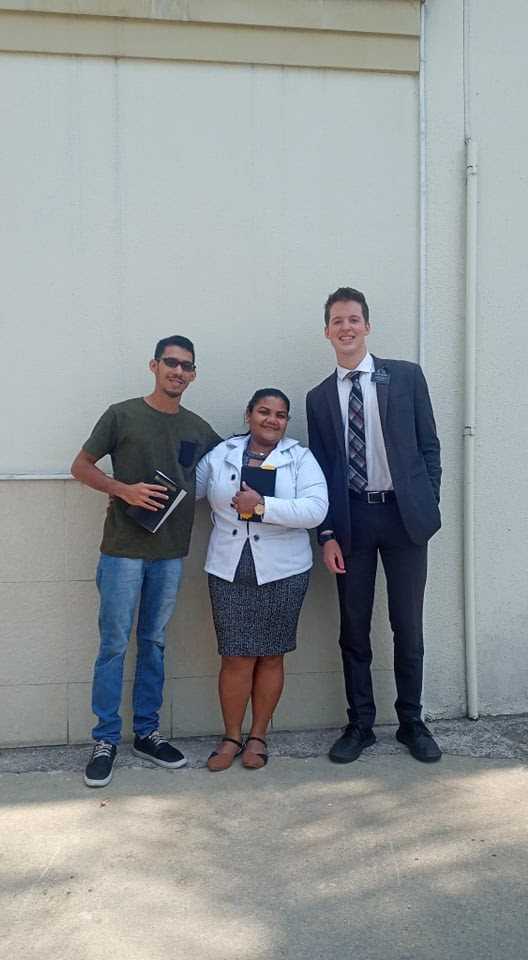

- Running
- Won a 200 mile race in a team of 12 in Southern California!
- Lived in Brazil for 2 years and enjoyed running the streets of Sao Paulo daily.
- Here is a video of the race I ran in Southern California!
- One of my biggest accomplishment was completing a half-marathon in the Summer of 2022!
- One of my favorite photos is me right after I finished the half-marathon
- Service
- Service has always been an important part of my life and I've always tried creating a life focused around service
- One of the biggest blessing of my life was being able to serve and live in Brazil for 2 years as I served
- The pictures below are some of favorite memories from that trip 

Sean Alder's Tableau Project

Back to Top